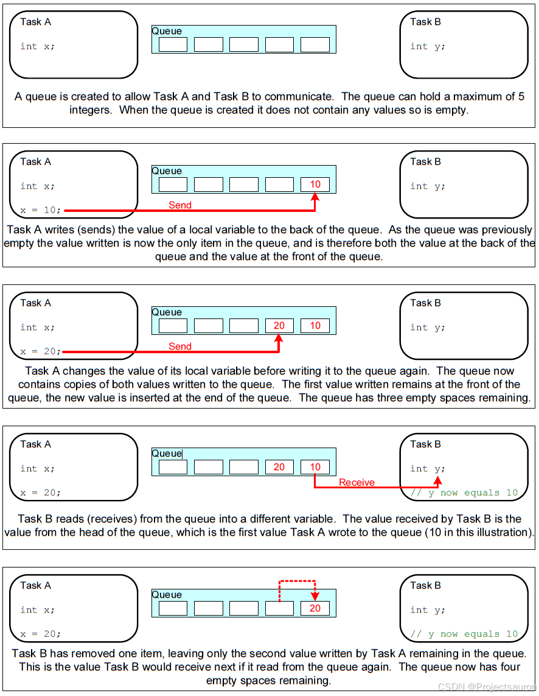

FreeRTOS 快速入门（四）之队列
@toc
一、队列的特性
1、数据存储
一个队列能保存有限数量的固定大小的数据单元。一个队列能保存单元的最大数量叫做 “长度”。每个队列数据单元的长度与大小是在创建队列时设置的。
队列通常是一个先入先出（FIFO）的缓冲区，即数据在队列末尾（tail）被写入，在队列前部（head）移出。下图展示了数据被写入和移出作为 FIFO 使用的队列。也可以写入队列的前端，并覆盖已位于队列前端的数据。

2、传输数据的两种方法
使用队列传输数据时有两种方法：
- 拷贝：把数据、把变量的值复制进队列里
- 引用：把数据、把变量的地址复制进队列里
FreeRTOS 使用==拷贝值==的方法，这更简单：
- 局部变量的值可以发送到队列中，后续即使函数退出、局部变量被回收，也不会影响队列中的数据
- 无需分配 buffer 来保存数据，队列中有 buffer
- 局部变量可以马上再次使用
- 发送任务、接收任务解耦：接收任务不需要知道这数据是谁的、也不需要发送任务来释放数据
- 如果数据实在太大，你还是可以使用队列传输它的地址
- 队列的空间有
FreeRTOS内核分配，无需任务操心
3、队列的阻塞访问
只要知道队列的句柄，谁都可以读、写该队列。任务、ISR 都可读、写队列。可以多个任务读写队列。
任务读写队列时，简单地说：如果读写不成功，则阻塞；可以指定超时时间。
某个任务读队列时，如果队列没有数据，则该任务可以进入阻塞状态：还可以指定阻塞的时间。如果队列有数据了，则该阻塞的任务会变为就绪态。如果一直都没有数据，则时间到之后它也会进入就绪态。
既然读取队列的任务个数没有限制，那么当多个任务读取空队列时，这些任务都会进入阻塞状态：有多个任务在等待同一个队列的数据。当队列中有数据时，哪个任务会进入就绪态？
- 优先级最高的任务
- 如果大家的优先级相同，那等待时间最久的任务会进入就绪态
跟读队列类似，一个任务要写队列时，如果队列满了，该任务也可以进入阻塞状态：还可以指定阻塞的时间。如果队列有空间了，则该阻塞的任务会变为就绪态。如果一直都没有空间，则时间到之后它也会进入就绪态。
既然写队列的任务个数没有限制，那么当多个任务写”满队列”时，这些任务都会进入阻塞状态：有多个任务在等待同一个队列的空间。当队列中有空间时，哪个任务会进入就绪态？
- 优先级最高的任务
- 如果大家的优先级相同，那等待时间最久的任务会进入就绪态
二、多任务访问
队列本身就是对象，任何知道它们存在的任务或 ISR 都可以访问它们。任意数量的任务可以写入同一个队列，任意数量的任务也可以从同一个队列读取。在实践中，队列有多个写入者是非常常见的，但是队列有多个读取者就不那么常见了。
2.1 阻塞队列读取
当任务尝试从队列中读取时，它可以选择指定 “阻塞” 时间。 如果队列已经为空，则这是任务将保持在阻塞状态以等待队列中的数据可用的时间。 当另一个任务或中断将数据放入队列时，处于阻塞状态且等待数据从队列中变为可用的任务将自动移至就绪状态。 如果指定的阻塞时间在数据可用之前到期，则任务也将自动从 “阻塞” 状态移动到 “就绪” 状态。
队列可以有多个读取者，因此单个队列可能会由多个在其上阻塞等待数据的任务。 在这种情况下，只有一个任务在数据可用时将被解除阻塞。 取消阻塞的任务始终是等待数据的最高优先级任务。 如果被阻塞的任务具有相同的优先级，那么等待数据最长的任务将被阻塞。
2.2 阻塞队列写入
与从队列读取数据时一样，任务也可以在向队列写入数据时指定阻塞时间。在这种情况下，如果队列已经满了，则阻塞时间是任务应该保持在阻塞状态以等待队列上可用空间的最长时间。
队列可以有多个写入者，因此对于一个完整的队列，可能有多个任务阻塞在队列上，等待完成发送操作。在这种情况下，当队列上的空间可用时，只有一个任务将被解除阻塞。未阻塞的任务总是等待空间的最高优先级任务。如果阻塞的任务具有相同的优先级，那么等待空间最长的任务将被解除阻塞。
2.3 阻塞多个队列
队列可被分组到集合中，允许任务进入阻塞状态来等待数据在集合的任何队列中变为可用。
三、队列函数
使用队列的流程：创建队列、写队列、读队列、删除队列。
1、创建
队列的创建有两种方法：动态分配内存、静态分配内存：
- 动态分配内存：
xQueueCreate，队列的内存在函数内部动态分配
函数原型如下：
1 | QueueHandle_t xQueueCreate( UBaseType_t uxQueueLength, UBaseType_t uxItemSize ); |
| 参数 | 说明 |
|---|---|
uxQueueLength |
队列长度，最多能存放多少个数据(item) |
uxItemSize |
每个数据(item)的大小：以字节为单位 |
返回值 |
非 0：成功，返回句柄，以后使用句柄来操作队列 NULL：失败，因为内存不足 |
- 静态分配内存：
xQueueCreateStatic，队列的内存要事先分配好
函数原型如下：
1 | QueueHandle_t xQueueCreateStatic( |
| 参数 | 说明 |
|---|---|
uxQueueLength |
队列长度，最多能存放多少个数据(item) |
uxItemSize |
每个数据(item)的大小：以字节为单位 |
pucQueueStorageBuffer |
如果 uxItemSize 非 0，pucQueueStorageBuffer 必须指向一个 uint8_t 数组，此数组大小至少为”uxQueueLength * uxItemSize“ |
pxQueueBuffer |
必须执行一个 StaticQueue_t 结构体，用来保存队列的数据结构 |
返回值 |
非 0：成功，返回句柄，以后使用句柄来操作队列 NULL：失败，因为 pxQueueBuffer 为 NULL |
例：
1 | // 示例代码 |
复位
队列刚被创建时，里面没有数据；使用过程中可以调用 xQueueReset() 把队列恢复为初始状态，此函数原型为：
1 | /* pxQueue : 复位哪个队列; |
2、删除
删除队列的函数为 vQueueDelete() ，只能删除使用动态方法创建的队列，它会释放内存。原型如下：
1 | void vQueueDelete( QueueHandle_t xQueue ); |
3、写队列
可以把数据写到队列头部，也可以写到尾部，这些函数有两个版本：在任务中使用、在 ISR 中使用。函数原型如下：
1 | /* 等同于xQueueSendToBack |
| 参数 | 说明 |
|---|---|
xQueue |
队列句柄，要写哪个队列 |
pvItemToQueue |
数据指针，这个数据的值会被复制进队列，复制数据大小：在创建队列时已经指定了数据大小 |
xTicksToWait |
如果队列满则无法写入新数据，可以让任务进入阻塞状态，xTicksToWait 表示阻塞的最大时间(Tick Count)。如果被设为 0，无法写入数据时函数会立刻返回； 如果被设为 portMAX_DELAY，则会一直阻塞直到有空间可写 |
返回值 |
pdPASS：数据成功写入了队列errQUEUE_FULL：写入失败，因为队列满了。 |
4、读队列
使用 xQueueReceive() 函数读队列，读到一个数据后，队列中该数据会被移除。这个函数有两个版本：在任务中使用、在 ISR 中使用。函数原型如下：
1 | BaseType_t xQueueReceive( QueueHandle_t xQueue, |
| 参数 | 说明 |
|---|---|
xQueue |
队列句柄，要读哪个队列 |
pvBuffer |
bufer 指针，队列的数据会被复制到这个 buffer。复制数据大小：在创建队列时已经指定了数据大小 |
xTicksToWait |
如果队列空则无法读出数据，可以让任务进入阻塞状态，xTicksToWait 表示阻塞的最大时间(Tick Count)。如果被设为 0，无法读出数据时函数会立刻返回； 如果被设为 portMAX_DELAY，则会一直阻塞直到有数据可写 |
返回值 |
pdPASS：从队列读出数据入errQUEUE_EMPTY：读取失败，因为队列空了。 |
5、查询
可以查询队列中有多少个数据、有多少空余空间。函数原型如下：
1 | /* |
6、覆盖/偷看
当队列长度为 1 时，可以使用 xQueueOverwrite() 或 xQueueOverwriteFromISR() 来覆盖数据。注意，队列长度必须为 1。当队列满时，这些函数会覆盖里面的数据，这也以为着这些函数不会被阻塞。函数原型如下：
1 | /* 覆盖队列 |
如果想让队列中的数据供多方读取，也就是说读取时不要移除数据，要留给后来人。那么可以使用”窥视”，也就是 xQueuePeek() 或 xQueuePeekFromISR()。这些函数会从队列中复制出数据，但是不移除数据。这也意味着，如果队列中没有数据，那么”偷看”时会导致阻塞；一旦队列中有数据，以后每次”偷看”都会成功。函数原型如下：
1 | /* 偷看队列 |
四、示例
1、例一：从队列接收时阻塞
1.1 写入队列
此示例演示了正在创建的队列，从多个任务发送到队列的数据以及从队列中接收的数据。 创建队列以保存 int32_t 类型的数据项。 发送到队列的任务不指定阻塞时间，从队列接收的任务执行。
发送到队列的任务的优先级低于从队列接收的任务的优先级。 这意味着队列永远不应包含多个项目，因为只要数据被发送到队列，接收任务就会解锁，抢占发送任务，并删除数据 - 再次将队列留空。
下面的代码显示了写入队列的任务的实现。 创建此任务的两个实例，一个将值 100 连续写入队列，另一个将值 200 连续写入同一队列。 任务参数用于将这些值传递到每个任务实例中。
1 | static void vSenderTask( void *pvParameters ) |
1.2 从队列接受数据
下面显示了从队列接收数据的任务的实现。 接收任务指定块时间为 100 毫秒，因此将进入阻塞状态以等待数据变为可用。 当队列中的数据可用时，它将离开阻塞状态，或者在没有数据可用的情况下，它将离开 100 毫秒。 在此示例中，100 毫秒超时应该永不过期，因为有两个任务连续写入队列。
1 | static void vReceiverTask( void *pvParameters ) |
1.3 主函数
下面是 main() 函数的定义。 这只是在启动调度程序之前创建队列和三个任务。 创建队列以最多保存五个 int32_t 值，即使设置了任务的优先级，使得队列一次也不会包含多个项目。
1 | /* 声明一个类型为 QueueHandle_t 的变量。该变量用于将句柄存储到所有三个任务都访问的队列中。 */ |
发送到队列的两个任务都具有相同的优先级。 这导致两个发送任务依次将数据发送到队列。所以最终结果如下：
1 | Received = 100 |
函数执行顺序如下：

2、例二：发送到队列和发送队列结构时的阻塞
例二和例一类似，但任务优先级相反，因此接收任务的优先级低于发送任务。 此外，队列用于传递结构，而不是整数。
2.1 结构定义
下面的代码显示了例二使用的结构的定义。
1 | /* 定义用于标识数据源的枚举类型。 */ |
在示例 10 中，接收任务具有最高优先级，因此队列中永远不会存在多个元素。 这是因为一旦数据被放入队列中，接收任务就会抢占发送任务。 在示例 11 中，发送任务具有更高的优先级，因此队列通常是满的。 这是因为，一旦接收任务从队列中删除了一个项目，它就会被其中一个发送任务抢占，然后立即重新填充队列。 然后，发送任务重新进入阻塞状态，等待空间再次在队列中可用。
2.2 发送任务
接下来是发送任务的实现。 发送任务指定 100 毫秒的阻塞时间，因此每次队列变满时，它都会进入阻塞状态以等待由可用空间。当队列中有空间可用时，或者没有空间可用的情况下超过 100 毫秒时，它就会离开阻塞状态。在这个例子中，100 毫秒超时应该永不过期，因为接受任务通过从队列中删除元素来不断地腾出空间。
1 | static void vSenderTask( void *pvParameters ) |
2.3 接受任务
接收任务的优先级最低，所以只有当两个发送任务都处于阻塞状态时，接收任务才会运行。发送任务仅在队列满时才进入阻塞状态，因此接收任务仅在队列满时才会执行。因此，即使没有指定阻塞时间，它也总是期望接收数据。
下面是接收任务的实现。
1 | static void vReceiverTask( void *pvParameters ) |
2.4 main 函数
main() 仅比前一个示例略有变化。 创建队列以容纳三个 Data_t 结构，并且发送和接收任务的优先级相反。 main() 的实现如下所示。
1 | int main( void ) |
最终输出如下：
1 | From Sender 1 = 100 |
下图显示了由于发送任务的优先级高于接收任务的优先级而导致的执行顺序。